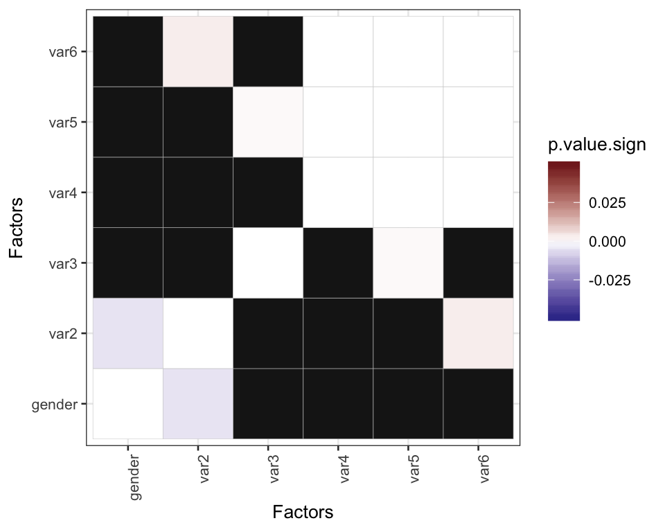
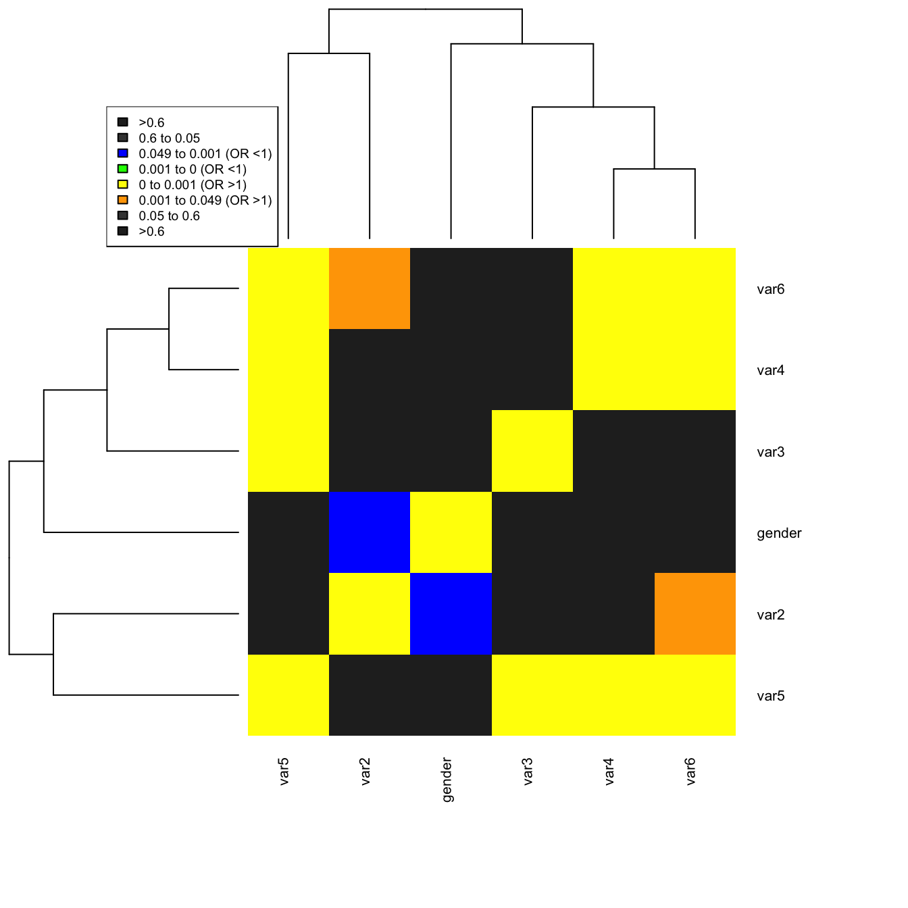

heatmaps with p-values (2)... coloured according to odds ratio
I like heatplots with p-values -or frequencies, or whatever-. Not very conclusive, but pretty anyway. And when talking about graphs, pretty will make our neurons to fire in more interesting ways: neurons like “pretty” graphs. Moreover, observing your data can be as important as analysing it. It’s better to observe, to listen your patients than making tests without knowing very much about them…
In the heatmaps of the previous post, not a lot of information can be included. Maybe could be useful to write in the tiles the actual p-values, the residuals, or the odds ratios (OR) of the significant crossings (take a look at this solution with ggplot2)…
But one little tweak can be done to make a more informative plot:
different color scales for crossed factors with OR less than 1 (cold), and other scale for ORs more than 1 (hot).
To start, we’ll use the same pevious database:
library(plyr)
library(ggplot2)
library(scales)
library(reshape)gender <- c(
"1", "2", "1", "2", "1", "1", "1", "1", "1", "1", "1", "1", "1", "1", "1", "2", "2", "1", "1", "1", "2", "1", "2", "1", "1", "1", "1", "1", "1", "1", "2", "2", "1", "2", "1", "1", "1", "1", "1", "1", "2", "1", "1", "1", "1", "1", "1",
"2", "2", "1", "2", "1", "2", "2", "1", "1", "1", "2", "1", "2", "2", "2", "2", "2", "1", "1", "1", "1", "1", "1", "1", "1", "2", "1", "1", "1", "2", "1", "1", "1", "1", "2", "1", "1", "1", "1", "1", "2", "1", "2", "1", "1", "1", "1",
"1", "1", "1", "2", "1", "1", "1", "2", "1", "1", "2", "1", "1", "2", "2", "2", "1", "2", "1", "2", "1", "1", "1", "1", "2", "2", "2", "2", "2", "1", "1", "1", "1", "2", "2", "1", "1", "1", "1", "1", "1", "2", "1", "1", "2", "1", "2",
"1", "1", "1", "1", "1", "2", "1", "1", "1", "1", "1", "2", "1", "1", "2", "1", "2", "1", "1", "1", "1", "1", "2", "1", "2", "2", "1", "2", "2", "1", "1", "1", "1", "1", "2", "2", "1", "1", "1", "2", "1", "2", "1", "1", "1", "1", "1",
"1", "1", "1", "1", "1", "2", "1", "1", "1", "2", "2", "1", "2", "1", "1", "1", "1", "2", "1", "1", "1", "1", "1", "1", "2", "2", "1", "1", "1", "1", "2", "1", "1", "1", "1", "2", "1", "2", "1", "1", "2", "1", "1", "1", "1", "1", "2",
"2", "1", "1", "1", "1", "1", "1", "1", "1", "1", "2", "1", "2", "1", "1", "1", "2", "1", "2", "2", "1", "1", "1", "1", "1", "1", "1", "1", "1", "1", "2", "1", "2", "1", "1", "1", "1", "2", "1", "1", "1", "2", "1", "2", "2", "1", "1",
"1", "1", "2", "1", "1", "1", "1", "1", "1", "1", "1", "1", "1", "1", "2", "1", "1", "1", "2", "1", "1", "1", "2", "2", "1", "1", "2", "2", "1", "1", "1", "2", "1", "1", "1", "1", "1", "2", "1", "1", "1", "1", "1", "2", "1", "2", "2",
"1", "1", "1", "1", "1", "2", "1", "2", "1", "1", "1", "1", "1", "1", "2", "1", "2", "1", "1", "1", "1", "1", "1", "2", "2", "1", "1", "2", "1", "2", "2", "1", "2", "2", "1", "2", "2", "2", "1", "2", "1", "2", "2", "1", "1", "1", "1",
"1", "1", "1", "1", "1", "2", "2", "1", "1", "2", "2", "2", "1", "2", "2", "2", "2", "1", "2", "1", "1", "2")
var2 <- c(
"0", "1", "0", "0", "0", "0", "0", "0", "0", "0", "1", "0", "0", "0", "0", "0", "0", "0", "1", "0", "1", "0", "0", "0", "1", "1", "0", "0", "0", "0", "0", "0", "0", "0", "0", "0", "0", "0", "0", "0", "1", "0", "0", "0", "0", "0", "0",
"0", "0", "0", "0", "0", "0", "0", "1", "1", "0", "0", "1", "1", "0", "0", "0", "0", "1", "0", "1", "1", "0", "0", "0", "0", "0", "0", "0", "0", "0", "1", "0", "0", "1", "0", "0", "1", "1", "0", "0", "0", "0", "1", "1", "1", "1", "0",
"0", "1", "0", "0", "0", "0", "1", "0", "1", "0", "0", "0", "0", "0", "0", "0", "1", "0", "1", "0", "0", "1", "1", "1", "0", "1", "0", "0", "0", "0", "0", "0", "0", "0", "0", "0", "0", "0", "0", "0", "0", "0", "0", "0", "0", "0", "0",
"1", "1", "1", "1", "1", "0", "0", "1", "1", "0", "0", "0", "0", "1", "0", "1", "0", "0", "0", "0", "1", "0", "1", "1", "0", "0", "0", "0", "0", "1", "0", "0", "0", "1", "0", "0", "0", "0", "0", "0", "1", "0", "1", "0", "0", "0", "0",
"0", "1", "0", "0", "0", "0", "1", "0", "0", "1", "0", "0", "0", "0", "0", "0", "0", "1", "1", "1", "0", "0", "1", "0", "1", "0", "1", "0", "0", "1", "0", "0", "0", "1", "0", "0", "1", "1", "0", "0", "0", "0", "1", "0", "1", "1", "0",
"1", "1", "1", "0", "0", "0", "0", "0", "1", "0", "1", "0", "0", "0", "0", "1", "0", "0", "0", "0", "0", "0", "0", "1", "0", "0", "0", "1", "0", "1", "0", "0", "0", "1", "0", "0", "1", "0", "0", "0", "0", "0", "0", "0", "0", "0", "0",
"0", "0", "0", "0", "0", "0", "0", "0", "0", "0", "0", "0", "0", "0", "0", "0", "0", "0", "0", "0", "0", "0", "0", "0", "0", "0", "0", "0", "0", "0", "0", "0", "0", "0", "0", "0", "0", "0", "0", "0", "0", "0", "0", "0", "0", "0", "0",
"1", "0", "0", "0", "0", "0", "1", "0", "0", "0", "0", "0", "0", "0", "0", "0", "0", "0", "0", "1", "0", "0", "1", "0", "0", "0", "0", "0", "1", "1", "0", "1", "0", "0", "1", "0", "0", "0", "0", "0", "0", "0", "0", "1", "0", "0", "0",
"1", "0", "0", "0", "0", "1", "0", "0", "1", "0", "0", "0", "0", "0", "0", "0", "0", "0", "0", "0", "0", "0")
var3 <- c(
"0", "0", "0", "0", "0", "1", "0", "0", "0", "0", "1", "0", "0", "0", "0", "0", "0", "0", "0", "0", "0", "0", "0", "1", "0", "0", "0", "0", "0", "0", "1", "0", "0", "0", "0", "1", "0", "0", "0", "0", "0", "0", "0", "0", "0", "0", "0",
"0", "1", "0", "0", "0", "0", "1", "0", "1", "0", "1", "0", "0", "0", "0", "0", "0", "0", "0", "0", "0", "0", "0", "1", "0", "0", "0", "0", "0", "1", "0", "0", "0", "0", "0", "0", "1", "0", "0", "0", "0", "0", "0", "0", "0", "0", "0",
"0", "0", "0", "1", "0", "0", "0", "1", "0", "0", "0", "0", "1", "0", "1", "0", "0", "0", "1", "0", "0", "0", "0", "1", "0", "0", "0", "0", "0", "0", "0", "0", "0", "0", "0", "0", "0", "0", "0", "1", "0", "0", "0", "0", "0", "0", "0",
"0", "0", "0", "0", "0", "0", "0", "0", "1", "0", "0", "1", "0", "0", "0", "0", "0", "0", "0", "0", "0", "0", "0", "0", "0", "0", "1", "0", "0", "0", "0", "1", "0", "0", "1", "0", "0", "0", "0", "0", "0", "1", "1", "0", "0", "0", "1",
"0", "0", "0", "0", "0", "0", "0", "1", "0", "0", "1", "0", "0", "0", "1", "0", "0", "0", "0", "0", "0", "0", "0", "1", "0", "0", "1", "0", "0", "1", "0", "0", "0", "0", "1", "0", "0", "0", "0", "0", "0", "0", "0", "1", "0", "0", "0",
"1", "0", "0", "0", "1", "1", "1", "1", "0", "0", "0", "0", "0", "0", "0", "0", "0", "0", "0", "0", "1", "0", "0", "0", "1", "0", "0", "0", "0", "1", "0", "0", "0", "1", "0", "0", "0", "0", "0", "0", "0", "0", "1", "0", "0", "1", "0",
"0", "0", "1", "1", "0", "1", "0", "0", "0", "0", "0", "0", "0", "0", "1", "1", "1", "0", "1", "0", "0", "0", "0", "0", "0", "0", "0", "0", "0", "0", "1", "0", "0", "0", "0", "0", "0", "1", "0", "0", "1", "0", "0", "0", "0", "1", "0",
"1", "0", "1", "0", "0", "0", "1", "0", "0", "0", "0", "0", "0", "0", "0", "0", "1", "1", "0", "0", "0", "1", "0", "0", "0", "0", "0", "0", "1", "0", "1", "0", "1", "1", "1", "1", "0", "0", "0", "0", "1", "0", "0", "1", "0", "0", "0",
"1", "1", "0", "0", "0", "0", "0", "0", "0", "0", "0", "1", "1", "0", "0", "0", "1", "0", "0", "0", "1", "0")
var4 <- c(
"0", "1", "0", "0", "0", "0", "1", "0", "1", "1", "0", "1", "0", "1", "1", "0", "0", "0", "1", "0", "0", "0", "0", "0", "0", "0", "1", "1", "0", "0", "1", "0", "0", "0", "0", "0", "0", "0", "0", "0", "0", "1", "0", "0", "0", "0", "1",
"1", "0", "1", "0", "1", "1", "1", "0", "1", "0", "0", "0", "0", "0", "0", "0", "1", "0", "1", "0", "0", "0", "0", "0", "1", "0", "1", "0", "0", "0", "0", "0", "0", "0", "0", "0", "0", "0", "0", "1", "0", "1", "1", "1", "1", "0", "0",
"0", "1", "0", "0", "0", "0", "0", "0", "1", "0", "0", "0", "1", "1", "0", "0", "1", "0", "0", "0", "0", "0", "0", "0", "0", "1", "0", "0", "0", "0", "0", "0", "0", "0", "0", "0", "0", "1", "1", "1", "0", "0", "0", "1", "0", "1", "1",
"1", "1", "0", "1", "1", "1", "1", "1", "1", "1", "0", "1", "1", "1", "1", "1", "1", "1", "1", "1", "1", "1", "0", "1", "1", "1", "1", "1", "1", "0", "0", "0", "1", "0", "1", "0", "0", "0", "1", "1", "0", "0", "1", "0", "1", "0", "1",
"0", "0", "1", "1", "1", "1", "1", "0", "0", "0", "0", "0", "0", "1", "0", "1", "1", "0", "1", "1", "0", "1", "0", "1", "0", "1", "0", "0", "0", "0", "1", "1", "1", "1", "0", "0", "1", "1", "1", "1", "1", "0", "1", "0", "1", "1", "1",
"1", "0", "0", "1", "1", "1", "1", "1", "1", "1", "1", "1", "0", "1", "1", "1", "1", "1", "0", "1", "1", "1", "0", "1", "0", "0", "1", "1", "1", "1", "0", "0", "1", "1", "0", "0", "1", "1", "0", "0", "1", "0", "1", "1", "0", "0", "1",
"0", "0", "0", "0", "0", "0", "0", "1", "0", "1", "0", "0", "0", "0", "0", "1", "1", "0", "0", "0", "1", "0", "1", "0", "0", "0", "1", "0", "0", "1", "1", "1", "1", "1", "0", "1", "1", "1", "0", "1", "1", "1", "0", "0", "1", "1", "1",
"1", "1", "0", "1", "1", "1", "0", "1", "1", "0", "0", "0", "0", "0", "1", "0", "1", "0", "1", "1", "1", "1", "0", "1", "1", "0", "1", "0", "0", "1", "1", "1", "1", "1", "1", "1", "1", "1", "1", "1", "1", "1", "1", "0", "0", "0", "1",
"1", "1", "0", "0", "0", "0", "1", "1", "1", "1", "1", "1", "1", "1", "0", "1", "1", "1", "1", "0", "1", "0")
var5 <- c(
"0", "1", "1", "0", "0", "1", "0", "0", "0", "0", "0", "1", "0", "1", "0", "0", "0", "0", "0", "0", "0", "0", "0", "0", "0", "0", "1", "0", "0", "0", "1", "0", "0", "0", "0", "0", "0", "0", "0", "0", "0", "0", "0", "0", "0", "0", "0",
"0", "0", "0", "0", "1", "0", "0", "0", "0", "0", "0", "0", "0", "1", "0", "1", "0", "0", "0", "0", "0", "1", "0", "0", "0", "0", "0", "1", "0", "0", "0", "0", "0", "1", "0", "0", "0", "0", "1", "0", "0", "1", "0", "0", "1", "0", "0",
"1", "1", "0", "0", "0", "0", "0", "1", "0", "0", "1", "0", "1", "1", "1", "0", "0", "0", "0", "0", "0", "0", "0", "1", "0", "0", "0", "0", "1", "1", "0", "0", "0", "0", "0", "0", "0", "0", "0", "0", "0", "0", "0", "0", "0", "1", "0",
"1", "1", "0", "1", "1", "0", "1", "1", "1", "1", "1", "1", "0", "1", "1", "0", "0", "1", "1", "0", "1", "0", "0", "0", "1", "0", "1", "1", "1", "0", "0", "0", "1", "0", "0", "0", "0", "0", "0", "1", "0", "0", "0", "0", "1", "0", "1",
"0", "0", "1", "1", "0", "0", "1", "1", "1", "0", "0", "0", "0", "0", "0", "1", "1", "0", "1", "1", "1", "1", "0", "1", "0", "1", "1", "0", "0", "0", "0", "1", "1", "1", "1", "0", "1", "1", "0", "0", "1", "0", "1", "1", "0", "1", "1",
"0", "1", "0", "0", "1", "1", "1", "1", "1", "1", "1", "1", "1", "1", "1", "1", "1", "1", "0", "1", "1", "1", "0", "1", "0", "0", "1", "0", "1", "0", "0", "0", "1", "1", "0", "0", "1", "0", "0", "0", "1", "0", "0", "1", "0", "0", "0",
"0", "0", "1", "0", "0", "0", "0", "0", "1", "0", "1", "0", "0", "0", "1", "1", "1", "0", "0", "0", "0", "0", "0", "0", "0", "0", "0", "0", "0", "1", "1", "0", "1", "1", "1", "1", "0", "1", "1", "0", "1", "0", "0", "1", "1", "1", "1",
"1", "1", "0", "1", "1", "0", "1", "1", "1", "0", "0", "0", "0", "0", "1", "1", "1", "0", "1", "1", "0", "0", "0", "1", "0", "0", "1", "0", "0", "0", "1", "1", "1", "1", "1", "1", "1", "0", "1", "0", "1", "1", "0", "1", "1", "0", "1",
"1", "1", "0", "0", "0", "0", "1", "1", "1", "1", "0", "1", "1", "1", "0", "1", "1", "1", "1", "1", "1", "0")
var6 <- c(
"1", "1", "0", "0", "1", "1", "1", "1", "1", "1", "1", "1", "1", "1", "1", "0", "0", "0", "0", "0", "0", "0", "0", "0", "0", "0", "0", "0", "0", "0", "0", "0", "0", "0", "0", "0", "0", "0", "0", "0", "0", "0", "0", "0", "0", "0", "0",
"1", "1", "1", "0", "0", "0", "0", "0", "0", "0", "0", "0", "0", "0", "0", "0", "0", "0", "1", "1", "0", "0", "0", "0", "0", "0", "0", "0", "0", "0", "1", "0", "0", "1", "1", "0", "0", "0", "0", "0", "0", "1", "1", "1", "1", "1", "1",
"1", "1", "1", "1", "1", "1", "1", "1", "1", "1", "1", "1", "1", "1", "1", "1", "1", "1", "0", "0", "0", "0", "0", "0", "0", "0", "0", "0", "0", "0", "0", "0", "0", "0", "0", "0", "0", "0", "0", "0", "0", "0", "0", "0", "0", "1", "1",
"1", "1", "1", "1", "1", "1", "1", "1", "0", "0", "0", "0", "0", "0", "0", "0", "0", "0", "0", "0", "1", "1", "1", "1", "1", "0", "0", "0", "0", "0", "0", "1", "0", "0", "0", "1", "0", "0", "1", "1", "1", "0", "0", "0", "1", "1", "1",
"1", "1", "1", "1", "1", "1", "0", "0", "0", "0", "0", "0", "0", "0", "0", "0", "0", "1", "1", "1", "1", "1", "1", "1", "1", "1", "1", "1", "1", "1", "1", "1", "1", "1", "1", "1", "1", "0", "0", "0", "1", "1", "1", "1", "1", "1", "1",
"1", "1", "1", "1", "1", "1", "1", "1", "1", "1", "1", "1", "1", "1", "1", "1", "0", "0", "1", "1", "1", "1", "0", "0", "1", "1", "0", "1", "1", "1", "1", "1", "1", "1", "1", "1", "1", "1", "1", "1", "0", "0", "0", "1", "1", "0", "0",
"0", "0", "0", "0", "0", "0", "0", "0", "0", "0", "0", "0", "0", "0", "1", "1", "1", "0", "0", "0", "0", "0", "0", "0", "0", "0", "0", "0", "0", "0", "0", "1", "1", "0", "0", "1", "1", "1", "1", "0", "0", "0", "0", "1", "0", "0", "0",
"1", "1", "1", "1", "1", "1", "0", "1", "0", "0", "0", "1", "1", "0", "0", "1", "1", "0", "1", "1", "1", "1", "1", "1", "1", "1", "0", "0", "0", "1", "1", "1", "0", "1", "1", "1", "1", "0", "1", "0", "0", "1", "1", "1", "1", "0", "1",
"1", "1", "1", "1", "1", "1", "1", "1", "1", "1", "1", "1", "1", "1", "1", "1", "1", "1", "1", "1", "1", "0")
corfac <- data.frame(gender,var2,var3,var4,var5,var6)
summary(corfac)
gender var2 var3 var4 var5 var6
1:277 0:312 0:321 0:201 0:236 0:197
2:121 1: 86 1: 77 1:197 1:162 1:201
head(corfac) # see the first rows of the data matrix
gender var2 var3 var4 var5 var6
1 1 0 0 0 0 1
2 2 1 0 1 1 1
3 1 0 0 0 1 0
4 2 0 0 0 0 0
5 1 0 0 0 0 1
6 1 0 1 0 1 1
class(corfac)
[1] "data.frame"Then, we will make the same “square” template:
combos <- expand.grid(rep(list(1:ncol(corfac)), 2 )) # combinations with repetitions
combos <- as.matrix(combos)
combos <- t(combos) # transpose matrixNow, the code to fill the template will change, to include a column named OR:
mat1 <- adply(combos, 2, function(x) {
test <- chisq.test(corfac[, x[1]], corfac[, x[2]])
.Table <- xtabs(~ corfac[, x[1]] + corfac[, x[2]], data=corfac)
Odds.r <- (.Table[1]/.Table[3])/(.Table[2]/.Table[4])
out <- data.frame("Row" = colnames(corfac)[x[1]]
, "Column" = colnames(corfac[x[2]])
, "Chi.Square" = round(test$statistic,8)
, "df" = test$parameter
, "p.value" = round(test$p.value, 3)
, "OR" = Odds.r
)
return(out)
})
head(mat1)
X1 Row Column Chi.Square df p.value OR
1 1 gender gender 393.28795074 1 0.000 Inf
2 2 var2 gender 7.94477890 1 0.005 0.4105767
3 3 var3 gender 0.09049022 1 0.764 1.1268029
4 4 var4 gender 0.32310997 1 0.570 1.1591611
5 5 var5 gender 0.02776728 1 0.868 0.9401586
6 6 var6 gender 0.00729802 1 0.932 1.0432874We have a matrix with all the crossings. We have also information about the OR value for each association. How can we translate this to colors?. Because in the final matrix only p-values will be allowed, I thought of signs in p-values to be the markers. The crossings with ORs < 1, would have p-values with a minus sign.
I have not been able to complete this steps in a better way. Maybe my code should be improved, but it works:
First of all, we create a “dummy factor” (mat1$or.sign) with strings corresponding to the future signs in the p-values. At the same time, we’ll be able to get rid of all the NAs that surely appeared in the matrix, in the OR column (not in this case, fortunately).
mat1$or.sign[mat1$OR < 1] <- "neg" mat1$or.sign[mat1$OR >= 1] <- "pos" mat1$or.sign[is.na(mat1$or.sign)] <- "pos" # solves problem of OR = NA summary(mat1) X1 Row Column Chi.Square df 1 : 1 gender:6 gender:6 Min. : 0.0073 Min. :1 2 : 1 var2 :6 var2 :6 1st Qu.: 0.1374 1st Qu.:1 3 : 1 var3 :6 var3 :6 Median : 4.3419 Median :1 4 : 1 var4 :6 var4 :6 Mean : 75.1401 Mean :1 5 : 1 var5 :6 var5 :6 3rd Qu.: 31.9211 3rd Qu.:1 6 : 1 var6 :6 var6 :6 Max. :394.0096 Max. :1 (Other):30 p.value OR or.sign Min. :0.0000 Min. :0.4106 Length:36 1st Qu.:0.0000 1st Qu.:1.1296 Class :character Median :0.1975 Median :1.2557 Mode :character Mean :0.3342 Mean : Inf 3rd Qu.:0.7110 3rd Qu.:3.3707 Max. :0.9320 Max. : Inf head(mat1) X1 Row Column Chi.Square df p.value OR or.sign 1 1 gender gender 393.28795074 1 0.000 Inf pos 2 2 var2 gender 7.94477890 1 0.005 0.4105767 neg 3 3 var3 gender 0.09049022 1 0.764 1.1268029 pos 4 4 var4 gender 0.32310997 1 0.570 1.1591611 pos 5 5 var5 gender 0.02776728 1 0.868 0.9401586 neg 6 6 var6 gender 0.00729802 1 0.932 1.0432874 posSecond, all p-values = 0 are a problem here (no signs can be added). We will transform zeroes to very little numbers, like:
mat1$p.value[mat1$p.value==0] <- 0.00001We will create a column that contains all the p-values, but with negative sign:
mat1$p.value.neg <- mat1$p.value - 2*mat1$p.valueAfter that, we can create the “definitive” p-value column, where the sign corresponds to the value in “mat1$or.sign”. If you get any errors, you can pass the same commands again…
mat1$p.value.sign[which(mat1$or.sign=="pos")] <- mat1$p.value[which(mat1$or.sign=="pos")] mat1$p.value.sign[which(mat1$or.sign=="neg")] <- mat1$p.value.neg[which(mat1$or.sign=="neg")]Now the data is almost ready!
In ggplot2
Just a ggplot2 example…
library(scales) q <- ggplot(mat1, aes(Row, Column, fill = p.value.sign)) + geom_tile(colour="gray80") + theme_bw(10) + xlab("Factors") + ylab("Factors") + scale_fill_gradient2(low = muted("darkblue"), mid = "white", high = muted("red"), midpoint = 0, space = "Lab", na.value = "grey10", guide = "colourbar", limits=c(-0.049, 0.049)) q + theme(axis.text.x = element_text(angle = 90, hjust = 1))
Clustered heatmap with gplots:
And below is my favourite representation because of the clustering and the great result/readability with simple colors (I don’t find easy to distinguish very small changes in tone/hue, or I need another screen).
First, we have to reshape the data:
matz <- mat1[,c(2,3,10)] head(matz) Row Column p.value.sign 1 gender gender 0.00001 2 var2 gender -0.00500 3 var3 gender 0.76400 4 var4 gender 0.57000 5 var5 gender -0.86800 6 var6 gender 0.93200 mat2df <- cast(matz, Row~Column) mat2 <- as.matrix(mat2df) head(mat2) gender var2 var3 var4 var5 var6 gender 0.00001 -0.00500 0.76400 0.57000 -0.86800 0.93200 var2 -0.00500 0.00001 0.79000 0.47500 0.71100 0.00300 var3 0.76400 0.79000 0.00001 0.39000 0.00100 0.50700 var4 0.57000 0.47500 0.39000 0.00001 0.00001 0.00001 var5 -0.86800 0.71100 0.00100 0.00001 0.00001 0.00001 var6 0.93200 0.00300 0.50700 0.00001 0.00001 0.00001And then, we plot:
library(gplots) myCol <- c("gray15", "gray25", "blue", "green", "yellow", "orange", "gray25", "gray15") # Defining breaks for the color scale myBreaks <- c(-1, -0.06, -0.05, -0.001, 0, 0.001, 0.05, 0.06, 1) # pdf("result_heatmap.pdf", width = 30, height = 30) hm <- heatmap.2(mat2, scale="none", Rowv=T, Colv=T, col = myCol, ## using your colors breaks = myBreaks, ## using your breaks # dendrogram = "none", ## to suppress warnings margins=c(8,8), cexRow=0.8, cexCol=0.8, key=FALSE, keysize=1.5, trace="none") legend("topleft", fill = myCol, cex=0.6, legend = c(">0.6", "0.6 to 0.05", "0.049 to 0.001 (OR <1)", "0.001 to 0 (OR <1)", "0 to 0.001 (OR >1)", "0.001 to 0.049 (OR >1)", "0.05 to 0.6", ">0.6"))